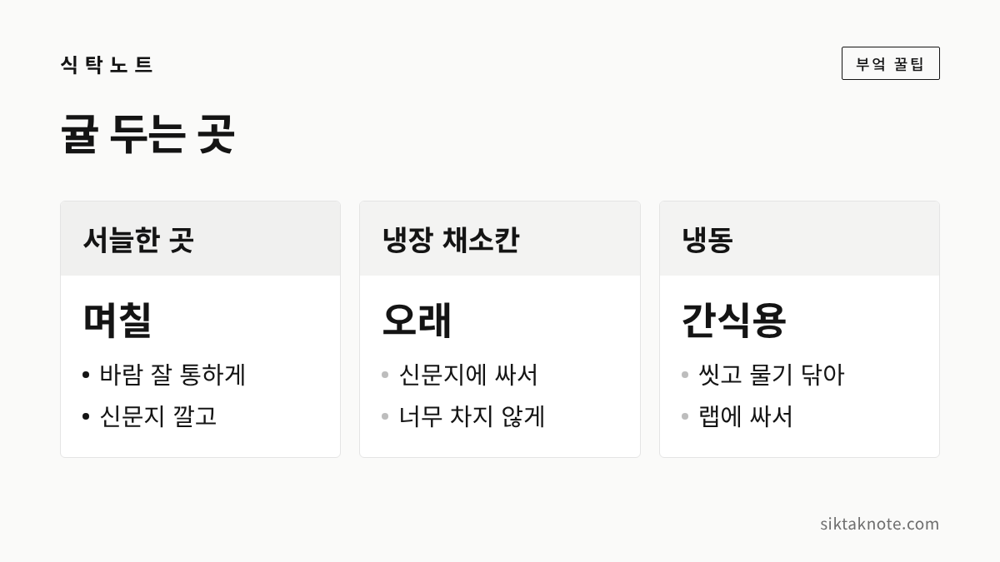
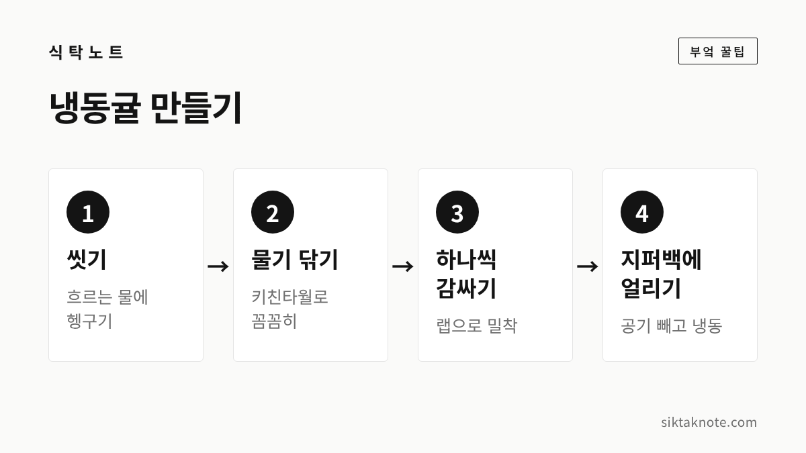

귤 보관법 — 상자째 받은 귤 오래 두는 법, 곰팡이 귤 골라내기, 냉동귤

3줄 요약
- 귤 상자는 받자마자 쏟아서 무르거나 곰팡이 핀 귤부터 골라내는 게 좋습니다.
- 며칠 먹을 귤은 바람 잘 통하는 서늘한 곳에, 오래 둘 귤은 신문지에 싸서 냉장고 채소칸에 둬요.
- 곰팡이가 핀 귤은 그 부분만 떼지 말고 통째로 버리고, 닿아 있던 귤은 먼저 드시면 됩니다.

귤은 한 상자씩 사 두고 오며 가며 집어 먹는 겨울 과일인데요. 상자 바닥에서 무른 귤이나 곰팡이 핀 귤을 발견하는 일도 그만큼 흔합니다. 귤은 받은 날 한 번만 손봐 두면 훨씬 오래 먹을 수 있으니, 이번 겨울에는 이 순서대로 해 보시면 좋겠습니다.
상자째 받으면 먼저 쏟아 보세요
귤 상자는 위에서 꺼내 먹다 보면 아래쪽은 끝까지 안 보게 되죠. 그런데 무게에 눌리고 서로 부딪히는 건 바닥 쪽 귤이거든요. 그래서 받은 날 넓은 쟁반이나 신문지 위에 한 번 다 쏟아서 살펴보시는 게 좋습니다.
- 눌렀을 때 물컹하거나 껍질이 터진 귤은 따로 빼서 먼저 먹어요.
- 하얗거나 푸른 가루 같은 곰팡이가 보이는 귤은 바로 버립니다.
- 상자 바닥이 젖어 있거나 얼룩이 졌다면 상자도 바꿔 주세요.
- 멀쩡한 귤만 다시 담습니다.
껍질이 얇고 작은 귤이 더 빨리 무르는 편이라, 그런 귤부터 먼저 드시면 됩니다.

곰팡이 핀 귤은 바로 빼냅니다
식품의약품안전처는 귤에서 가장 많이 보이는 곰팡이로 녹색곰팡이와 청색곰팡이를 꼽았는데요. 겉에 보이는 곰팡이는 일부일 뿐이고, 무른 과일 특성상 속까지 퍼져 있을 수 있다고 안내했습니다. 곰팡이가 조금이라도 보이면 그 부분만 떼어 내지 말고 통째로 버리라는 게 식약처 설명입니다(2020년 12월, 언론 보도로 확인).
곰팡이 핀 귤은 옆에 닿아 있는 귤까지 상하게 할 수 있어요. 그래서 같은 상자에 있던 귤은 한 번 씻어 물기를 완전히 닦은 뒤, 다른 귤보다 먼저 드시는 게 좋습니다. 식약처도 남은 귤은 씻어서 물기를 없애고 바닥에 신문지나 키친타월을 깔아 두라고 했다고 합니다.

며칠 먹을 귤은 서늘한 곳에 둡니다
일주일 안쪽으로 먹을 양이라면 굳이 냉장고에 넣지 않아도 되는데요. 다만 따뜻한 거실이나 주방은 피하고, 볕이 들지 않는 서늘한 곳에 두시는 게 좋습니다. 감귤은 온도가 높지 않고 바람이 잘 통하는 곳에 둬야 오래 먹을 수 있다고 알려져 있어요.
- 상자 바닥과 귤 사이에 신문지나 키친타월을 깔아요. 물기를 빨아들여 줍니다.
- 귤끼리 너무 꽉 끼지 않게 담습니다. 부딪히고 눌린 자리부터 무르거든요.
- 꼭지가 아래로 가게 놓으라는 제주도농업기술원 관계자의 말도 보도된 적이 있습니다.
- 비닐봉지에 꽉 묶어 두지 마세요. 공기가 통하지 않으면 시큼한 술 냄새 같은 이상한 냄새가 날 수 있습니다.
겨울 베란다는 서늘해서 좋지만, 영하로 떨어지는 날에는 귤이 얼 수 있으니 그런 날만 안으로 들여 주세요.

오래 둘 귤은 냉장고 채소칸으로
언론에 소개된 식약처 안내를 보면 귤 보관에 알맞은 온도는 3~4℃, 습도는 85~90% 정도인데요. 1℃ 이하에서는 냉해를 입기 쉽고, 온도가 높으면 귤의 호흡이 늘어 오래 못 간다고 합니다. 습도가 낮으면 수분이 날아가 금방 쪼글쪼글해지고요.
집 냉장고 냉장실이 대략 이 온도에 가까우니, 오래 둘 귤은 채소칸에 넣는 게 낫습니다. 냉장고 안은 건조한 편이라 귤을 몇 개씩 신문지나 키친타월로 느슨하게 감싸 넣으면 덜 마릅니다. 냉기가 바로 나오는 안쪽 벽에 붙여 두면 너무 차가워질 수 있으니, 채소칸 가운데쯤이 좋습니다.

냉동귤로 만들어 두기

귤이 너무 많을 때는 얼려 두는 것도 방법입니다. 냉동귤은 반쯤 녹았을 때 사각사각한 식감이 나서 간식으로 먹기 좋거든요.
- 귤을 흐르는 물에 씻어 먼지를 없앱니다.
- 키친타월로 물기를 꼼꼼히 닦아요. 물기가 남으면 겉에 성에가 두껍게 낍니다.
- 하나씩 랩으로 감싸 지퍼백에 담고, 공기를 빼서 얼립니다.
껍질을 까서 알맹이만 얼려도 됩니다. 먹을 때는 실온에 잠깐 두었다가 반쯤 녹았을 때 드시면 좋습니다. 한 번 녹은 귤은 물러져서 다시 얼리지 않는 게 좋겠습니다.

귤도 씻어서 드세요
귤은 껍질을 까서 먹으니 그냥 드시는 분이 많은데요. 껍질을 까는 손에 껍질 겉면의 먼지가 묻어 알맹이로 옮겨 갈 수 있으니, 씻어 두시는 편이 좋습니다. 식약처는 농산물은 깨끗한 물에 잠시 담갔다가 흐르는 물에 씻어 내기만 해도 흙이나 잔류농약을 효과적으로 없앨 수 있다고 안내하고 있습니다. 식초나 소금물로 씻어도 물로만 씻을 때와 큰 차이가 없었다고 하고요.
다만 씻은 귤을 젖은 채로 상자에 다시 넣으면 곰팡이가 생기기 쉬워요. 먹기 직전에 씻거나, 씻었다면 물기를 완전히 말려서 넣어 주세요.
맛있는 귤 고르는 법
귤을 고를 때는 아래 몇 가지만 보셔도 실패가 줄어듭니다. 언론에 소개된 감귤 관련 기관의 설명을 바탕으로 정리했습니다.
- 색: 색이 고르고 진한 귤이 좋다는 제주도농업기술원 관계자의 설명이 보도됐습니다.
- 꼭지: 꼭지가 갈색으로 변했거나 바짝 마른 귤은 피하시는 게 좋습니다.
- 크기: 너무 큰 귤보다 중간이나 조금 작은 귤이 맛이 좋다고 알려져 있습니다.
- 탄력: 껍질이 과육에 붙어 있고 눌렀을 때 탄력이 있는 귤이 싱싱합니다. 껍질이 들떠 푹신한 귤은 수분이 빠졌을 수 있어요.
인터넷으로 주문한 귤이 덜 익은 듯 시다면, 마르지 않게 종이상자에 담아 실내에 며칠 두었다가 드셔 보세요. 배송 시간을 생각해 조금 덜 익었을 때 수확하는 경우가 있다고 합니다.
이럴 땐 어떻게 하나요
껍질이 쪼글쪼글해진 귤은 먹어도 되나요?
수분이 빠져 그런 경우가 많아서, 곰팡이나 무른 곳이 없고 냄새가 괜찮다면 드셔도 됩니다. 다만 맛은 덜하니 먼저 드시는 게 좋겠습니다.
귤을 사과 옆에 둬도 되나요?
사과는 다른 과일을 빨리 익게 하는 성질이 있어서, 함께 두는 과일은 따로 보관하는 편이 좋습니다. 자세한 건 사과 오래 보관하는 법에 적어 두었어요.
귤은 한 상자 들여 두면 든든하지만, 그냥 두면 바닥부터 조용히 무르기 시작하는 과일입니다. 받은 날 한 번 쏟아서 골라내고, 서늘한 곳과 냉장고에 나눠 두기만 해도 끝까지 맛있게 드실 수 있을 것 같습니다. 같은 철에 많이 사 두는 배 보관법도 함께 봐 두세요.